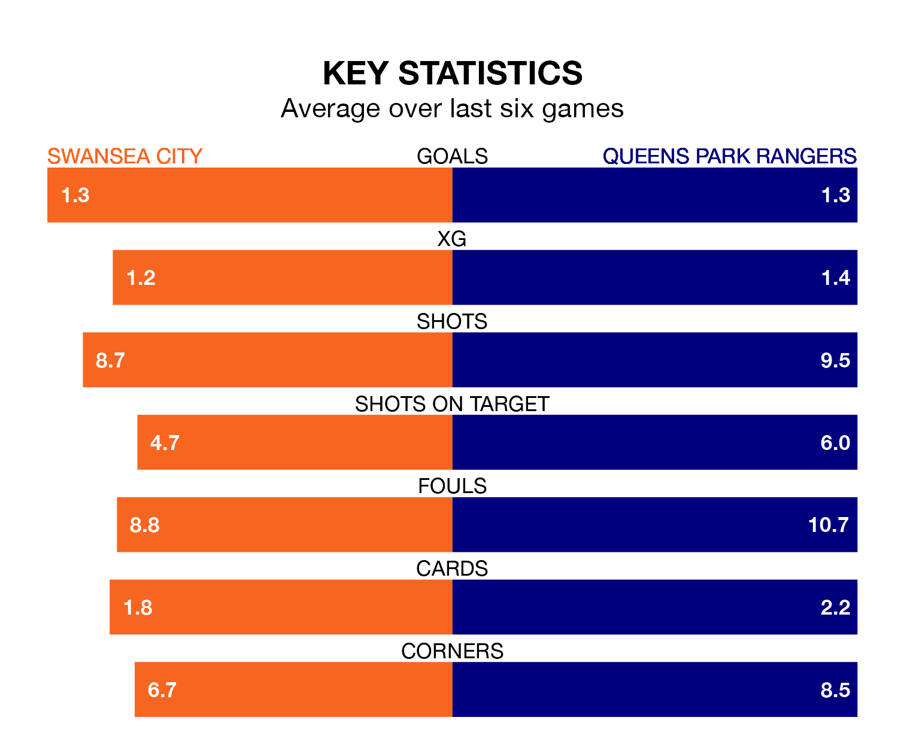

Swansea City host Queens Park Rangers on Monday at the Swansea.com Stadium in EFL Championship.
In their last league match, on Friday, Swansea drew with Sheffield Wednesday 1-1 away, with their goal scored by Jamal Lowe.
QPR won, 2-1 at home against Birmingham City, with Jimmy Dunne and Steve Cook on the scoresheet.
In the last 10 years, Swansea and QPR have played each other on 14 occasions. Swansea won five of them, QPR four, and they drew five times.
On average, the Swans scored 1.1 goals and QPR 1.1 in those matches.
Their last meeting was on September 19, when they played out a 1-1 draw.
In Asmir Begović, QPR can rely on one of the league's safest pair of hands. He has kept 10 clean sheets in his 39 appearances this season in EFL Championship.
In Swansea's net, Carl Rushworth has seven clean sheets in 39 games. He has conceded a goal every 63 minutes, 10% more often than the 72 minutes between goals for Begović.
Rangers are 18th in the table after 39 games, of which they have won 11 and drawn 10, earning 43 points.
City are three places ahead of the away side in 15th, with 12 wins and 11 draws putting them on 47 points.
With 38 goals in 39 games so far this season, QPR are scoring at below the league average rate with 1.0 goals per game. But they are conceding fewer than average too, letting in 51 goals at a rate of 1.3 per game.
The Swans are also below average scorers, with 1.3 goals per game, compared to a league average of 1.4. They have conceded 1.5 goals per game.
The hosts are in reasonable form in EFL Championship, with three wins and two draws from their last six games.
And also with three wins and two draws over that period, QPR's form is identical – they have both taken 11 points from 18.
Monday's match will be refereed by Samuel Allison, who has taken charge of 13 EFL Championship games so far this season, issuing one red card and booking 51 players. He has awarded one penalty.
The last Swansea game Allison refereed was a 1-0 home loss to Plymouth Argyle on February 3. He is yet to oversee a match featuring QPR this season.
Updated: 10:31 (UTC), 31/03/24